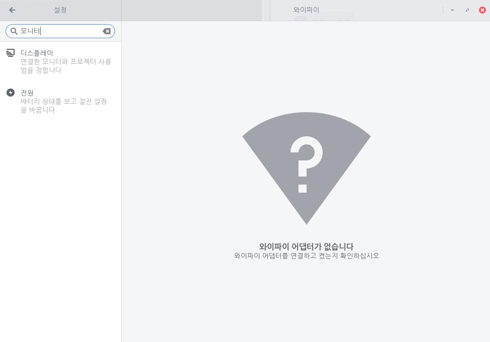
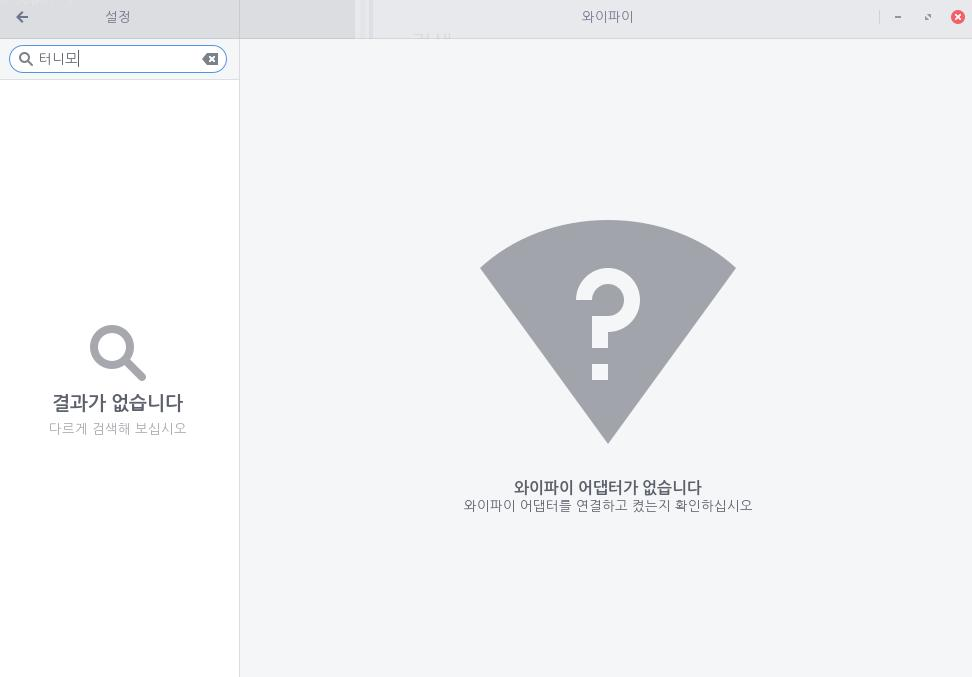
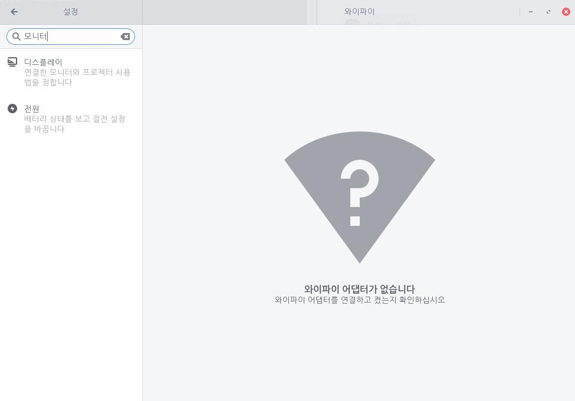
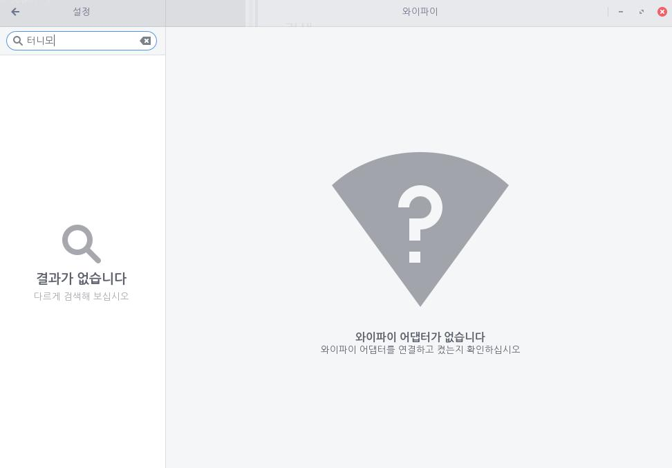

설정에서 사용자는 좌측 상단 [검색] 아이콘을 클릭하여 원하는 기능을 검색할 수 있습니다. 검색을 원하는 단어를 입력하면 단어와 연관된 기능이 나타납니다.

사용자가 검색한 단어가 없는 경우 "결과가 없습니다" 메시지를 확인할 수 있습니다.

검색바의 [뒤로가기]  아이콘을 클릭하여 검색창을 닫을 수 있습니다.
아이콘을 클릭하여 검색창을 닫을 수 있습니다.
설정에서 사용자는 좌측 상단 [검색] 아이콘을 클릭하여 원하는 기능을 검색할 수 있습니다. 검색을 원하는 단어를 입력하면 단어와 연관된 기능이 나타납니다.

사용자가 검색한 단어가 없는 경우 "결과가 없습니다" 메시지를 확인할 수 있습니다.

검색바의 [뒤로가기] 아이콘을 클릭하여 검색창을 닫을 수 있습니다.